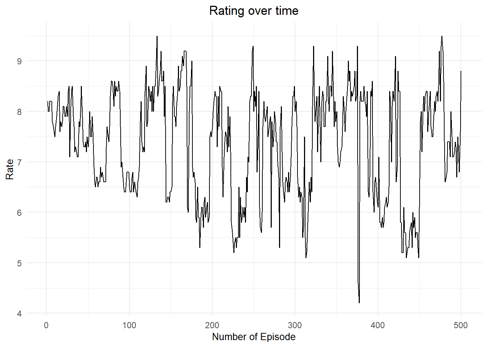

Naruto Report
Naruto: A Ninja’s Journey

Brief Description
Naruto is a Japanese manga series created by Masashi Kishimoto, following the adventures of Naruto Uzumaki, a young ninja aspiring to become the Hokage and gain recognition from his village. The story unfolds in two parts: Naruto’s pre-teen years and his teenage endeavors.
Main Charachters :
Team 7 stands out as the pivotal ensemble around which much of the narrative revolves :
Naruto Uzumaki: Bursting with energy and unyielding determination, Naruto’s ultimate goal is to earn the title of Hokage and gain the respect of his village. His relentless spirit and ability to connect with others make him a compelling protagonist.
Sasuke Uchiha: Recognized as a prodigy from the formidable Uchiha clan, Sasuke is immensely talented with a deep desire for power to avenge his clan’s downfall. His complex personality and internal struggles add a rich layer to his character.
Sakura Haruno: Initially infatuated with Sasuke, Sakura evolves from a love-struck girl into a strong-willed kunoichi. As a member of Team 7, she strives to prove her worth and develops considerable medical ninja skills.
Kakashi Hatake: The enigmatic and exceptionally skilled leader of Team 7, Kakashi is known for his tactical acumen and the iconic Sharingan eye. With a history marked by tragedy and loss, he imparts valuable lessons in teamwork and resilience to his squad.
Basic Statistics
- Original Manga Serialization: 1999–2014
- Total Manga Volumes: 72
- Original Anime Series: 2002–2007 (220 episodes)
- Sequel Anime “Naruto: Shippuden”: 2007–2017 (500 episodes)
- Movies: 11
- Original Video Animations (OVAs): 12
Rating
Naruto, as one of the Animes with the most filler episodes, the rating fluctuates so much with no specific pattern. Generally, the most rated episodes are Cannon ones with fights, strong emotions or big plot twist. In contrast, the lowest ratings are the fillers episodes which are usually skipped or skimmed through with relatively low viewership.
The highest-rated episodes such as “The tale of Jiraya the gallant” captivates the audience with a profound moments like Jiraya’s battle against Pain which ends in his the tragic but heroic death of this beloved character, earning the episode a 9.5 rating. Similarly, “Naruto and Sasuke” provides a spectacularly intense climax to the Anime’s most followed rivalry, combining emotional depth and action-filled sequences. Scenes from this episode which is also rated 9.5, remain iconic among the Anime fans and still circulate on the internet until this day. On the other hand of the spectrum, episodes like “Naruto vs. Mecha Naruto”, where Naruto weirdly fights off a mechanical doppelganger, significantly diverge from the main narrative, resulting in the lowest rating of 4.2; indicating of course the the viewer preference of main plot of an anime, of which 40% consists of Filler episodes.
| Episode Number | Type | Title | Rating |
|---|---|---|---|
| 133 | The Tale of Jiraiya the Gallant | Manga Canon | 9.5 |
| 477 | Naruto and Sasuke | Manga Canon | 9.5 |
| 249 | Thank You | Manga Canon | 9.3 |
| 322 | Madara Uchiha | Manga Canon | 9.3 |
| 375 | Kakashi vs. Obito | Manga Canon | 9.3 |
| 476 | The Final Battle | Manga Canon | 9.3 |
| Episode Number | Title | Type | Rating |
|---|---|---|---|
| 377 | Naruto vs. Mecha Naruto | Filler | 4.2 |
| 376 | The Directive to Take the Nine Tails | Filler | 4.6 |
| 313 | Rain Followed by Snow, with Some Lightning | Filler | 5.1 |
| 434 | Team Jiraiya | Filler | 5.1 |
| 449 | The Shinobi Unite | Filler | 5.1 |